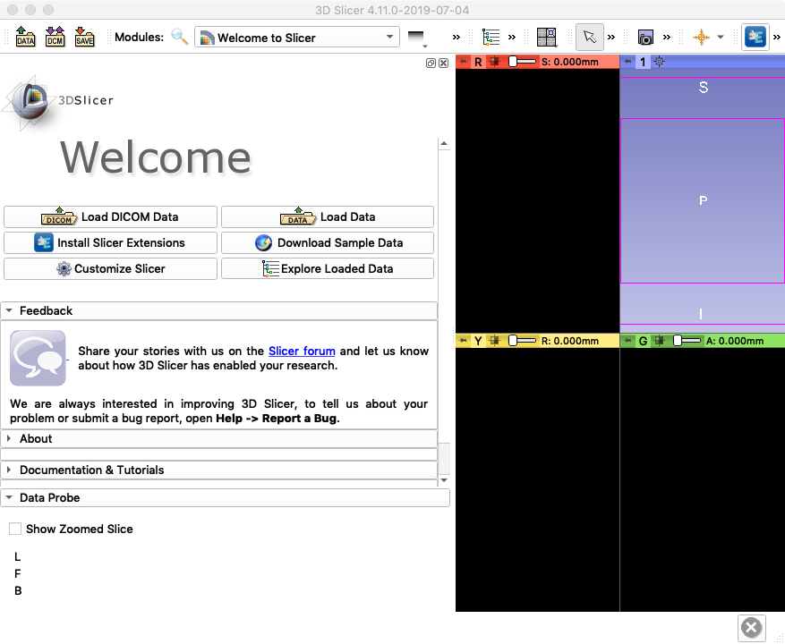
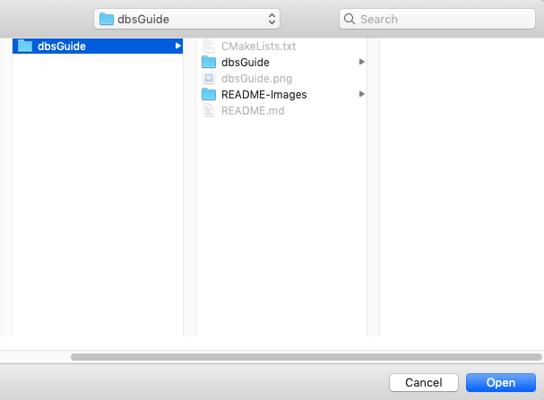
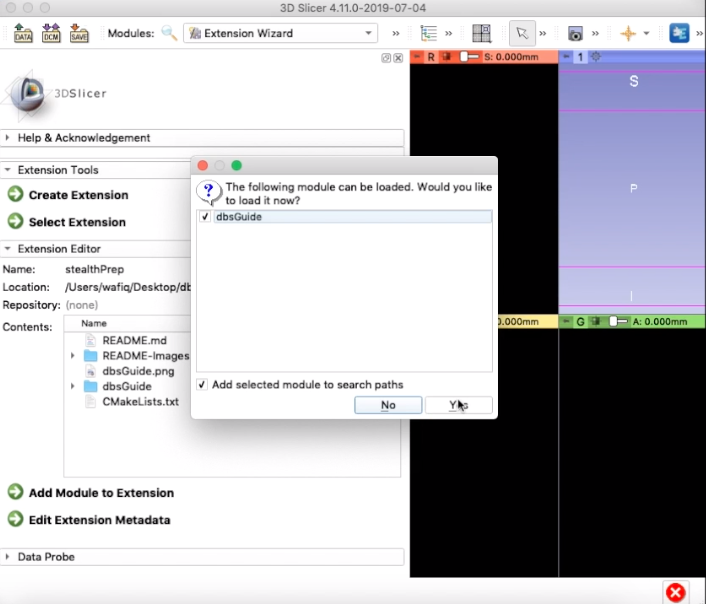

Requirements¶
-
3D Slicer
- 3D Slicer (Version 4.11.0 or later), Download here: https://download.slicer.org/
-
trajectoryGuide source code
- download the latest version of trajectoryGuide
Unzip the folder and save it somewhere on your system. For this tutorial, the file has been saved in Desktop.
Loading trajectoryGuide into 3D Slicer¶
-
Open 3D Slicer
It should look like this (if you have/don't have a Python Interactor at the bottom, that is fine)

-
Load trajectoryGuide module
On the top menu bar next to "Modules", select the drop down menu and go to "Developer Tools", then select "Extension Wizard." Under Extension Tools, press "Select Extension."

Select the trajectoryGuide-master folder and open it

-
Pop-up Window
A window will pop up. Make sure both options are selected and press yes.

The trajectoryGuide module is now apart of Slicer.
-
Open trajectoryGuide in Slicer
To open it, go to the modules drop down menu and select trajectoryGuide -> trajectoryGuide

You have now successfully loaded trajectoryGuide into Slicer. Your screen should look like this:
-
Reopening Slicer/trajectoryGuide
The next time you open Slicer, you don't have to go through the Extension Wizard. trajectoryGuide will be included in Slicer's modules. You may open trajectoryGuide straight from the Modules drop down menu (all you have to do is step 4 next time)